Electrical system
Electrical Parts
Battery cable
-
• Before disconnecting connectors or removing electrical parts, disconnect the negative battery cable.

Wiring harness

-
• Do not remove the harness protective tape. Otherwise, the wires could rub against the body, which could result in water penetration and electrical shorting.
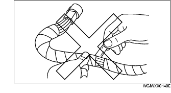
Connectors
Data link connector
• Inserting a jumper wire probe into the data link connector terminal may damage the terminal.
-
• Insert the probe into the terminal when connecting a jumper wire to the data link connector.
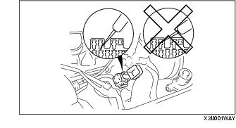
Disconnecting connectors
-
• When disconnecting connector, grasp the connectors, not the wires.

-
• Connectors can be disconnected by pressing or pulling the lock lever as shown.
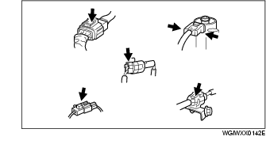
Locking connector
Inspection
-
• When a tester is used to inspect for continuity or measuring voltage, insert the tester probe from the wiring harness side.
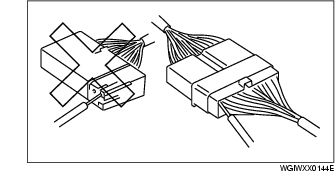
• To prevent damage to the terminal, wrap a thin wire around the tester probe before inserting into terminal.
-
• Inspect the terminals of waterproof connectors from the connector side since they cannot be accessed from the wiring harness side.

Terminals
Inspection

Replacement
-
• Use the appropriate tools to remove a terminal as shown. When installing a terminal, be sure to insert it until it locks securely.
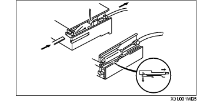
- • Insert a thin piece of metal from the terminal side of the connector and with the terminal locking tab pressed down, pull the terminal out from the connector.
Sensors, Switches, and Relays
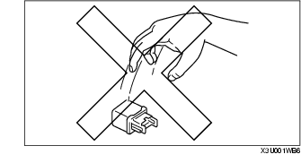
Wiring Harness
Wiring color codes
- • Two-color wires are indicated by a two-color code symbol.
- • The first letter indicates the base color of the wire and the second the color of the stripe.
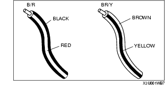
Fuse
Replacement
- • When replacing a fuse, be sure to replace it with one of the same capacity. If a fuse fails again, the circuit probably has a short and the wiring should be inspected.
-
• Be sure the negative battery terminal is disconnected before replacing a main fuse.

-
• When replacing a pullout fuse, use the fuse puller.

Direction of View for Connector
Part-side connector
Direction of view is from the terminal side.

Vehicle harness-side connector
Direction of view is from the harness side.
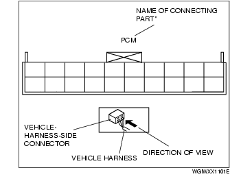
Other
Because vehicle harness-side connectors, such as the DLC-2, have to be viewed from the terminal side, the direction of view is from the terminal side.
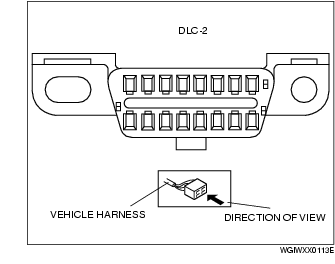
Electrical Troubleshooting Tools
Jumper wire
• Do not connect a jumper wire from the power source line to a body ground. This may cause burning or other damage to wiring harnesses or electronic components.
-
• A jumper wire is used to create a temporary circuit. Connect the jumper wire between the terminals of a circuit to bypass a switch.

Voltmeter
-
• The DC voltmeter is used to measure circuit voltage. A voltmeter with a range of 15 V or more is used by connecting the positive (+) probe (red lead wire) to the point where voltage will be measured and the negative (-) probe (black lead wire) to a body ground.
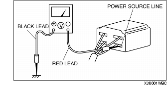
Ohmmeter
• Do not connect the ohmmeter to any circuit where voltage is applied. This will damage the ohmmeter.
-
• The ohmmeter is used to measure the resistance between two points in a circuit and to inspect for continuity and short circuits.
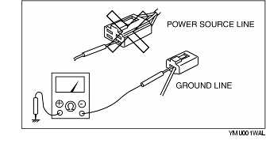
Ammeter
- • Adjust the range to measure the current.
- • Make sure the ammeter is always connected to the circuit in serial. Do not connect the ammeter to the circuit in parallel. This may burn out the ammeter.
- • The ammeter is used to measure the output of the generator, the current supplied to the starter, and the backup current in the circuit.
-
• Connect the positive (+) probe to the power source line and the negative (-) probe to the ground line.

Precautions Before Welding
Vehicles have various electrical parts. To protect the parts from excessive current generated when welding, be sure to perform the following procedure.
1. Turn the ignition switch to the LOCK position.
2. Disconnect the battery cables.

3. Securely connect the welding machine to the ground near the welding area.

4. Cover the peripheral parts of the welding area to protect them from weld spatter.